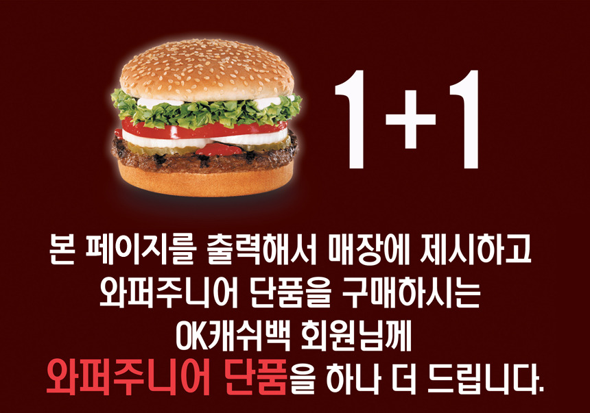

<!DOCTYPE html>
<html>
<head>
    <meta charset="utf-8" />
     <meta name="viewport" content="width=device-width, user-scalable=0, minimum-scale=1.0, maximum-scale=1.0"/>
    <meta name="apple-mobile-web-app-capable" content="yes" />
    <link rel="stylesheet" href="scratchPad.css" />
    <style>
        @media only all and (max-width:320px) {}
    </style>
    <script>
        function openPicture(){
            var dommy = document.getElementById('dommy');
            dommy.style.display = "block";
        }
    </script>
</head>
<body>
    <div id="scratchabWrapper">
        <div id="dommy">
            <!--  -->
        </div>
        <div id="scratchPadGameWrapper">
            <div class="lotteryWrapper" id="lotteryWrapper">
                <canvas class="lotteryTicket" id="lotteryTicket" width="640" height="336" ></canvas>
            </div>
        </div>
    </div>

    <script src="./jquery-1.8.0.js"></script>
     <script src="scratchPad.js"></script>
    <script>
        /* 생성자 = new ScratchPad(canvas element, result를 보여줄 element, options )  */

         var widthRatio = (window.innerWidth -40) / 640;
         var heightRatio = widthRatio;

        $('.lotteryTicket').css({
            width:640 *widthRatio,
            height:440 *heightRatio
        });
        $('.lotteryResult').css({
            width:640 * widthRatio,
            height:336 * heightRatio
        });

        var lotteryPad = new ScratchPad( "scratchPadGameWrapper", {

            brushThickness: 40, //brush 두께
            coverImgUrl:"img/cover.png", //긁어서 없어지는 cover 이미지
            canvas:$(".lotteryTicket").get(0),
            drawType:"line", // drawtype 'circle' or 'line'
            bonusPoint : "60,000", // 포인트 당첨시 얼마의 포인트를 지급할지 결정하는 옵션
            scratchedArea:50, // cover image를 몇 %나 scratch했을때 게임을 끝낼 것인지 결정, 단위는 %(백분율)
            resultPanelId : "lotteryResult",
            wrapperPanelId : "lotteryWrapper",
            onTouchStart:null, // 터치가 시작될때 호출할 함수
            onTouchMove:null, // 터치가 진행중일때 호출할 함수
            onTouchEnd:null, // 터치가 끝났을때 호출할 함수
            widthRatio : widthRatio,
            heightRatio : heightRatio,
            canvasWidth : 640 *widthRatio,
            canvasHeight : 440 * heightRatio,
            onScratchStart:null, //cover image의 scratch가 최초에 실행했을때 호출할 함수
            onScratchProgress:null, //cover image의 scratch가 진행중일때 호출할 함수
            onScratchEnd:null, // cover image의 scratch가 scratchedArea 만큼의 영역을 넘었을때 호출할 함수
            onAllScratched:null //cover image가 모두 scratch 되었을때 호출할 함수

        });
    </script>

</body>
</html>
